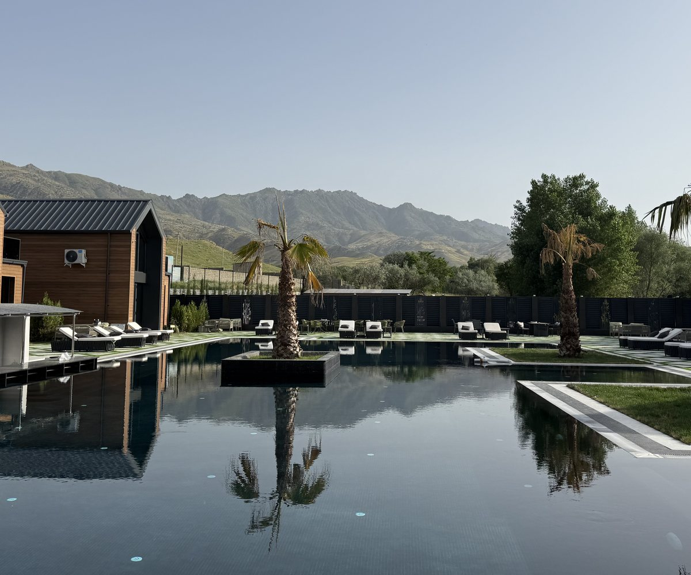

Zarra Resort — Горный резорт, Самарканд
Открыто 24/7
Safo Restaurant by Zarra Resort
Ресторан на территории резорта · 24/7
Страница ресторана
Открыто 24/7
Safo Restaurant by Zarra Resort
Ресторан на территории резорта · 24/7
Страница ресторана